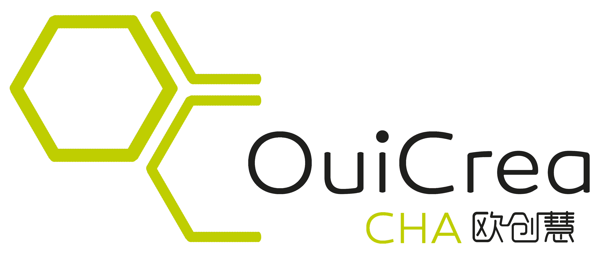

Chine-Hexagone Accelerator:
Programme d’incubation crossborder

Chine-Hexagone Accelerator (CHA) est un programme d’accélération conçu par OuiCrea en 2017 issue de ses propres expertises pour les entrepreneurs et les startups transfrontalières, qui consiste le coeurs de metiers de l'écosystème OuiCrea.
Le projet s’appuie sur l’espace OuiCrea CHA@Station F, aidant les entreprises innovantes francaises à comprendre le marché chinois et à essayer d‘y entrer, également aidant les entreprises innovantes chinoises à développer des activités en Europe.
En effet, Le programme Chine-Accelerator Hexagone s’appelle le programme 6 + 6, dont constituant de 6 mois d’incubation et de 6 mois d’acceleration dans les deux pays respectivement.
A travers du programme, nous accompagnons la transformation de 0 à 1 de la strategie internationale d’une startup.
1er mois
Installation au OuiCrea CHA (Station F)
Formation sur Business plan et présentation
2nd mois
Evaluation et amélioration du business plan
Pitch oral (connection avec un concours)
3eme mois
Workshops : connaitre le marché chinois
Étude de marché chinois avec des étudiants chinois en France
4eme mois
Expédition en Chine, voyage d’affaires
5ème mois
Préparation à la délocalisation en Chine
Formation sur les compétences commerciales en Chine (2 heures)
Formation sur la culture chinoise et la langue de base (2 heures)
6ème mois
Processus d'administration pour l’installation en Chine
Enregistrement de la société en Chine
Construction de site web, service Cloud
7ème – 12ème mois:
Incubation au OuiCrea en China (Suzhou/Shanghai) ou dans un incubateur de partenaires
Nous avons le programme similaire pour les entreprise chinoise souhaitant installer en Europe.